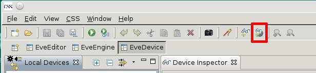
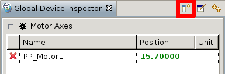

In Addition to devices observed and manipulated in a certain perspective there are scan independent devices which should always be accessible. To create a Device Inspector which is shared between perspectives add a Global Device Inspector View. This can be achieved by


As for adding, deleting, moving, sorting etc. the Global Device Inspector View behaves exactly like the Device Inspector View.